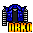

| ~~Armors~~ |
Item |
Nazwa |
Arm |
Atut |
| |
Tao Armor |
5 |
--- |
| |
Fighter Armor |
10 |
Health +50 |
|
Dark Coat |
12 |
--- |
| |
Tunic |
15 |
--- |
 |
C17 Armor |
15 |
Ki and Health Regeneration + 50/s |
|
Elven Jacket |
20 |
--- |
|
Fat Armor |
20 |
--- |
|
Jacket of Master Roshi |
22 |
--- |
|
Punk Armor |
23 |
--- |
|
Black Coat |
25 |
--- |
|
Scale Armor |
25 |
Ki +50 |
|
Bandit Coat |
25 |
Health+100 |
|
Uub Broken Armor |
30 |
Ki Regeneration +30 |
|
Goten Armor |
30 |
Health Regeneration +75/s |
|
Black Power Armor |
30 |
--- |
|
Red Power Armor |
30 |
Health Regeneration +40/s |
|
Power Armor |
30 |
Ki Regeneration +40/s |
 |
Experial Armor |
30 |
exp 20/s You Need Experial Legs and Boots to get another Exp 50/s |
|
Raditz Armor |
35 |
Defense+3 |
|
Soldier Armor |
35 |
Attack Speed +5 |
|
Piccolo Armor |
35 |
Ki Blasting +5 |
|
Goku Coat |
40 |
Ki and Health Regeneration +25/s |
|
Vilage Armor |
40 |
Power Regeneration 1/s |
|
Saiyan Armor |
40 |
Speed +20% |
 |
C18 Armor |
40 |
Ki Regeneration +50/s |
|
Future Trunks Armor |
40 |
Critical Attack +5 |
|
Gohan Armor |
45 |
Ki Attack +5% |
|
Dojo |
50 |
Ki Regeneration 50/s |
|
C16 Armor |
50 |
Ki Defense +5% |
|
Future Corporation Coat |
55 |
Critical Attack, Strenght, Defense, Energy +10, Speed +50 |
|
Bardock Armor |
55 |
Strenght,Critical Attack,Attack Speed,Ki Blast +5. |
|
Ussj Armor |
60 |
Ki Defense +1% |
|
Magma Armor |
60 |
health +500 |
|
Janemba Armor |
65 |
Attack Speed +10 |
|
Red Ribbon Army Jacket |
65 |
Attack Speed, Critical Atatck, Fighting +15, power regeneration 3/s |
|
Piccolo Robe |
70 |
Experiance 10/s |
|
Dabura Robe |
70 |
Speed +90 |
|
Majin Armor |
70 |
Speed +20, Strenght +5 |
|
Shaolin Armor |
75 |
HP+1000, KI+1000 |
 |
Frozen Armor |
80 |
You need frozen armor and frozen helmet then you get 5% more exp from Monsters |
|
Goku Armor |
90 |
Health +2000. |
|
Cell Armor |
95 |
Health and Mana + 5.000 |
|
East Kai Armor |
95 |
Health and Mana + 1.000, Ki and Health Regeneration 150/s |
|
Grand Kai Armor |
95 |
Health and Mana + 1.000, Ki and Health Regeneration 150/s |
|
South Kai Armor |
95 |
Health and Mana + 1.000, Ki and Health Regeneration 150/s |
|
Event Naruto Jacket |
100 |
Ki Attack +10% |
|
Tsuful Armor |
100 |
Strenght +20 |
|
Corporation Coat |
100 |
Critical Attack +10 |
|
Super C17 Armor |
110 |
Mana +5000 |
|
Shin Armor |
120 |
Ki and Health Regeneration +200/s |
|
Mistic Armor |
120 |
Ki and Health +5000, All skills +20, Ki and Health Regeneration +200/s |
|
Vegetto Armor |
130 |
Speed +80,All skills +10,Power regeneration 5/s |
|
Elite Shin Armor |
140 |
Ki and Health Regeneration +300/s |
|
Fusion Armor |
150 |
Health and Ki Regeneration +350/s |
 |
Xicor Armor |
200 |
Health and KI + 10.000 |